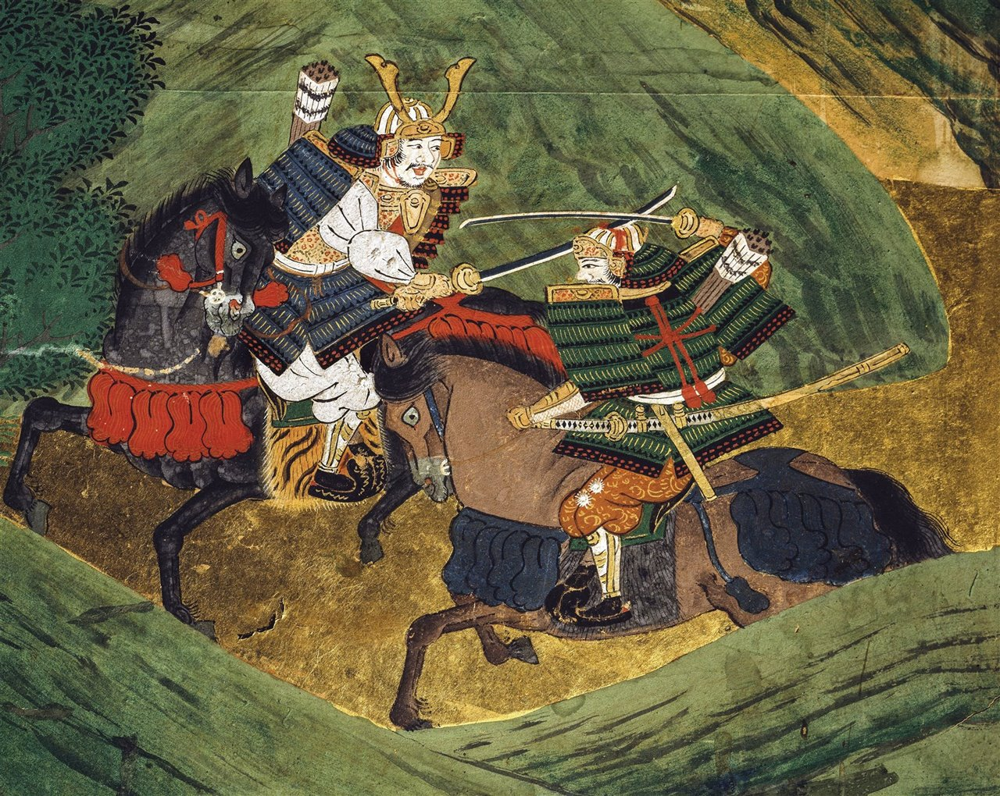
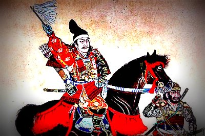
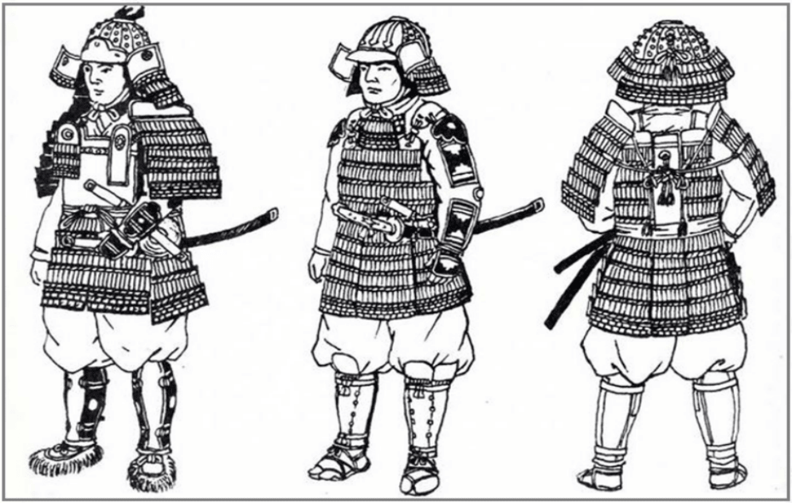
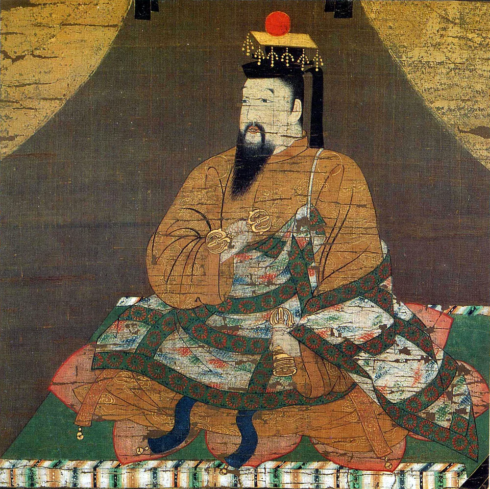
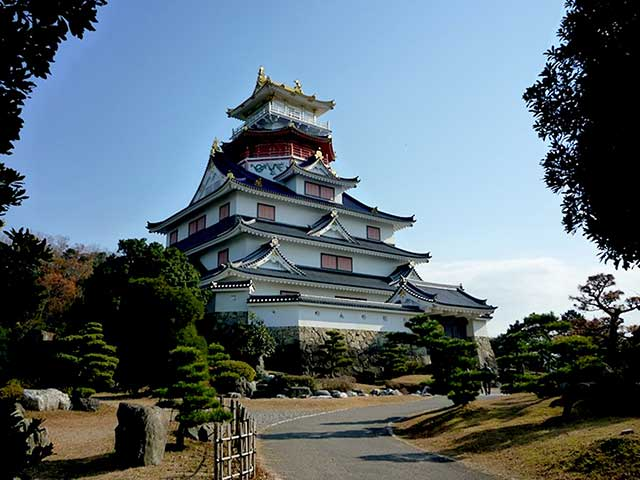
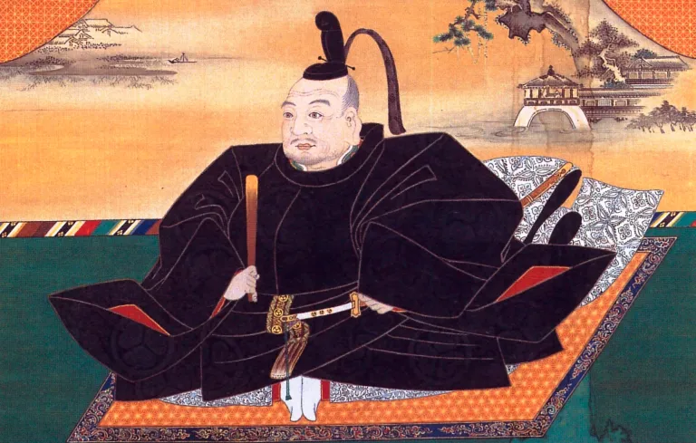

La era samurai en Japón, que abarca desde el siglo XII hasta el siglo XIX, fue un período marcado por la presencia de los guerreros samuráis, quienes desempeñaron un papel crucial en la historia y cultura japonesa. Los samuráis eran miembros de la clase guerrera que seguían un código de honor conocido como Bushido, que enfatizaba la lealtad, el coraje y la disciplina.

Durante este tiempo, Japón experimentó una serie de guerras civiles, luchas por el poder y cambios políticos significativos. El período Edo (1603-1868) fue especialmente notable, ya que trajo consigo un largo período de paz y estabilidad bajo el shogunato Tokugawa, donde los samuráis se convirtieron en administradores y funcionarios más que en guerreros activos.
La era samurai también dejó un legado cultural duradero, incluyendo artes marciales, literatura, teatro y filosofía. Aunque los samuráis perdieron su estatus oficial con la Restauración Meiji en 1868, su influencia sigue siendo evidente en la sociedad japonesa contemporánea.
Los samuráis eran conocidos por su destreza en el combate, especialmente con la katana, y por su dedicación a la perfección en todas las áreas de la vida. La figura del samurái ha sido romantizada en la cultura popular, convirtiéndose en un símbolo de honor y valentía.
De los samurai más renombrados se conocen a:
Miyamoto Musashi
Oda Nobunaga
Tokugawa Ieyasu
Minamoto no Yoshitsune
Hattori Hanzo
En resumen, la era samurai en Japón fue un período fascinante que moldeó la identidad nacional y cultural del país, dejando un impacto duradero que aún se siente hoy en día.
Las diferentes eras samurai abarcan desde el siglo IX hasta el siglo XIX, marcadas por cambios en el poder, la sociedad y la cultura japonesa. Estas eras se pueden dividir en: Heian, Kamakura, Muromachi, Sengoku, Azuchi-Momoyama y Tokugawa.
¿Que fue la era heian para los samurai?
La era Heian, que abarca desde el 794 hasta el 1185, es un período crucial en la historia de Japón, marcado por un florecimiento cultural y artístico. Durante esta época, la capital se trasladó a Heian-kyo (actual Kioto), lo que permitió un desarrollo significativo en la literatura, la poesía y las artes visuales.
Los samuráis, aunque no eran la clase dominante en este período, comenzaron a consolidar su poder y estatus. La figura del samurái se asoció con el código de honor conocido como Bushido, que enfatizaba la lealtad, el coraje y la disciplina. Este código se desarrolló en parte durante la era Heian, sentando las bases para el futuro papel de los samuráis en la sociedad japonesa.

Yoritomo Minamoto, después de derrotar al clan gobernante Taira y marcar el comienzo del período Kamakura y el gobierno del Shogunato Minamoto.
Sucesos importantes que causaron el inicio de la era Heian
El período Heian comenzó con el traslado de la capital a Heian-kyo, lo que marcó un cambio significativo en la política y la cultura japonesa. Durante esta época, la nobleza se centró en el desarrollo de una cultura refinada, caracterizada por la poesía, la literatura y las artes visuales.
Uno de los eventos más importantes fue la creación del sistema de clanes, donde las familias nobles comenzaron a consolidar su poder. La familia Fujiwara, en particular, desempeñó un papel crucial al controlar la corte imperial a través de matrimonios estratégicos y alianzas políticas.
Además, la era Heian vio el surgimiento de la figura del samurái, aunque su influencia no era tan prominente como en períodos posteriores. Los samuráis comenzaron a establecerse como guerreros leales a los nobles, y su código de honor, el Bushido, comenzó a tomar forma.
¿Que influencia tuvieron los samurai?
Los samuráis, aunque no eran la clase dominante durante la era Heian, comenzaron a establecerse como guerreros leales a los nobles. Su influencia se hizo más evidente a medida que el período avanzaba, especialmente con el surgimiento de clanes poderosos como los Minamoto y los Taira.
La figura del samurái se asoció con el código de honor conocido como Bushido, que enfatizaba la lealtad, el coraje y la disciplina. Este código se desarrolló en parte durante la era Heian, sentando las bases para el futuro papel de los samuráis en la sociedad japonesa.
Clanes importantes de la era Heian
Clan Fujiwara: Dominante en la corte imperial, controlaron la política a través de matrimonios estratégicos.
Clan Minamoto: Emergieron como guerreros poderosos, sentando las bases para futuros shogunatos.
Clan Taira: Rival del clan Minamoto, conocido por su participación en las guerras civiles de la época.
Sucesos por los que termino la era Heian
La era Heian llegó a su fin con el estallido de las guerras civiles, especialmente la Guerra Genpei (1180-1185), que enfrentó a los clanes Minamoto y Taira. Esta guerra culminó con la victoria de los Minamoto, lo que llevó al establecimiento del primer shogunato en Japón bajo Minamoto no Yoritomo.
El final de la era Heian marcó el comienzo del período Kamakura, donde los samuráis adquirieron un papel más prominente en la política y la sociedad japonesa. La figura del samurái se consolidó como un símbolo de honor y lealtad, y el código Bushido se convirtió en un principio fundamental en la vida de los guerreros japoneses.
>
¿Que fue la era Kamakura para los samurai?
La era Kamakura, que abarca desde 1185 hasta 1333, es un período crucial en la historia de Japón, marcado por el establecimiento del primer shogunato y el ascenso de los samuráis como clase dominante. Durante esta época, la figura del samurái se consolidó como un símbolo de honor y lealtad, y el código Bushido se convirtió en un principio fundamental en la vida de los guerreros japoneses.
Los samuráis, que habían comenzado a ganar influencia durante la era Heian, se convirtieron en la clase gobernante bajo el liderazgo de Minamoto no Yoritomo, quien estableció el shogunato Kamakura. Este período también se caracterizó por la defensa exitosa contra las invasiones mongolas y el desarrollo de una cultura samurái distintiva.

Armaduras durante el periodo Kamakura.
Sucesos importantes que causaron el inicio de la era Kamakura
El período Kamakura comenzó con la victoria de Minamoto no Yoritomo en la Guerra Genpei (1180-1185) contra el clan Taira. Esta guerra culminó con la derrota del clan Taira y el establecimiento del shogunato Kamakura, que marcó el inicio de un nuevo sistema de gobierno en Japón.
La victoria de los Minamoto permitió a Yoritomo consolidar su poder y establecer un gobierno militar en Kamakura, lo que significó un cambio significativo en la estructura política de Japón. Este nuevo sistema de gobierno permitió a los samuráis ejercer un control más directo sobre las tierras y la población, sentando las bases para el futuro dominio samurái en la sociedad japonesa.
Además, la era Kamakura se caracterizó por la defensa exitosa contra las invasiones mongolas en 1274 y 1281, lo que fortaleció aún más la posición de los samuráis como defensores de Japón. Estas invasiones, conocidas como las invasiones de Kublai Khan, fueron repelidas en gran parte gracias a la valentía y habilidad militar de los samuráis, así como a la intervención de tifones conocidos como "kamikaze" o vientos divinos.
¿Que influencia tuvieron los samurai?
Los samuráis tuvieron una influencia significativa durante la era Kamakura, ya que se convirtieron en la clase gobernante y establecieron un nuevo orden social y político. Bajo el liderazgo de Minamoto no Yoritomo, los samuráis consolidaron su poder y comenzaron a ejercer un control más directo sobre las tierras y la población.
La figura del samurái se asoció con el código de honor conocido como Bushido, que enfatizaba la lealtad, el coraje y la disciplina. Este código se convirtió en un principio fundamental en la vida de los guerreros japoneses y sentó las bases para la cultura samurái que perduraría en los siglos siguientes.
Clanes importantes de la era Kamakura
Clan Minamoto: Fundador del shogunato Kamakura, consolidó el poder samurái en Japón.
Clan Taira: Rival del clan Minamoto, derrotado en la Guerra Genpei.
Clan Hōjō: Asumió el control del shogunato como regentes durante gran parte de la era Kamakura.
Sucesos por los que termino la era Kamakura
La era Kamakura llegó a su fin en 1333 con la caída del shogunato Kamakura, que fue derrocado por Ashikaga Takauji durante la Guerra de Genkō. Este conflicto marcó el inicio del período Muromachi y el establecimiento del shogunato Ashikaga.
El final de la era Kamakura significó el colapso del sistema de gobierno militar establecido por Minamoto no Yoritomo y el ascenso de nuevos clanes al poder. Aunque los samuráis continuaron desempeñando un papel importante en la sociedad japonesa, la estructura política y social cambió significativamente con el advenimiento del shogunato Ashikaga.
¿Que fue la era Muromachi?
La era Muromachi, que abarca desde 1336 hasta 1573, es un período significativo en la historia de Japón, caracterizado por el establecimiento del shogunato Ashikaga y un florecimiento cultural notable. Durante esta época, los samuráis continuaron desempeñando un papel crucial en la política y la sociedad japonesa, consolidando su influencia y poder.
El shogunato Ashikaga, fundado por Ashikaga Takauji, marcó un cambio en la estructura política de Japón, con el shogunato gobernando desde Kioto. Este período también se conoce por su desarrollo cultural, incluyendo el auge del teatro Noh, la poesía y las artes visuales.

Emperador Go-Daigo.
Fue el 96º emperador de Japón, reinando desde 1318 hasta 1339.
Sucesos importantes que causaron el inicio de la era Muromachi
El período Muromachi comenzó con la victoria de Ashikaga Takauji en la Guerra de Genkō (1331-1333) contra el shogunato Kamakura. Esta guerra culminó con la derrota del shogunato Kamakura y el establecimiento del shogunato Ashikaga, que marcó un cambio significativo en la estructura política de Japón.
La victoria de Takauji permitió a los Ashikaga consolidar su poder y establecer un gobierno militar en Kioto, lo que significó un cambio en la dinámica de poder entre los clanes samuráis. Este nuevo sistema de gobierno permitió a los samuráis ejercer un control más directo sobre las tierras y la población, sentando las bases para el futuro dominio samurái en la sociedad japonesa.
Además, la era Muromachi se caracterizó por el desarrollo de una cultura samurái distintiva, con un enfoque en las artes, la poesía y el teatro. El teatro Noh, en particular, se convirtió en una forma de arte importante durante este período, reflejando los valores y la estética de la clase samurái.
¿Que influencia tuvieron los samurai?
hubo una profunda influencia en la cultura samurái, especialmente a través del auge del budismo zen y el desarrollo de nuevas formas de arte como el teatro Noh y la ceremonia del té. El budismo zen, con su énfasis en la meditación y la disciplina, resonó con los valores samuráis, influyendo en su ética y estética, mientras que las nuevas formas de arte se convirtieron en expresiones importantes de la cultura samurái.
Los samuráis continuaron desempeñando un papel crucial en la política y la sociedad japonesa, consolidando su influencia y poder.
Clanes importantes de la era Muromachi
Clan Ashikaga: Fundador del shogunato Ashikaga, consolidó el poder samurái en Japón.
Clan Hosokawa: Aliado importante del shogunato Ashikaga, desempeñó un papel clave en la política de la época.
Clan Uesugi: Rival del clan Ashikaga, conocido por su influencia en el norte de Japón.
Sucesos por los que termino la era Muromachi
La era Muromachi llegó a su fin en 1573 con la derrota del shogunato Ashikaga por Oda Nobunaga, un líder militar que buscaba unificar Japón bajo su mando. Esta derrota marcó el colapso del shogunato Ashikaga y el inicio del período Sengoku, caracterizado por la fragmentación política y las luchas entre clanes samuráis.
El final de la era Muromachi significó el colapso del sistema de gobierno militar establecido por Ashikaga Takauji y el ascenso de nuevos líderes militares al poder. Aunque los samuráis continuaron desempeñando un papel importante en la sociedad japonesa, la estructura política y social cambió significativamente con el advenimiento del período Sengoku.
¿Que fue la era Sengoku?
La era Sengoku. Este período se caracteriza por una intensa guerra civil y caos social en todo Japón. Se considera que el inicio de la Era Sengoku es la Guerra de Ōnin (1467-1477), que devastó Kioto y marcó el colapso efectivo del poder del shogunato Muromachi, caracterizado por la fragmentación política y las luchas entre clanes samuráis. Durante esta época, Japón se vio sumido en una serie de guerras civiles y conflictos territoriales, lo que llevó a un cambio significativo en la estructura política y social del país.
La era Sengoku, también conocida como el período de los Estados Guerreros, fue testigo del ascenso y caída de numerosos clanes samuráis, cada uno luchando por el control territorial y la supremacía militar. Este período también se caracterizó por el surgimiento de líderes militares poderosos, como Oda Nobunaga, Toyotomi Hideyoshi y Tokugawa Ieyasu, quienes jugaron un papel crucial en la unificación de Japón.
Oda Nobunaga, uno de los líderes más destacados de la era Sengoku, conocido por sus tácticas militares innovadoras y su ambición de unificar Japón.
Sucesos importantes que causaron el inicio de la era Sengoku
Como antes se mencionó, el período Sengoku comenzó con la Guerra de Ōnin (1467-1477), que marcó el colapso efectivo del poder del shogunato Muromachi. Esta guerra civil devastó Kioto y llevó a la fragmentación del poder político en Japón, con numerosos clanes samuráis luchando por el control territorial.
La guerra de Ōnin fue un conflicto entre dos facciones rivales de la nobleza, lo que resultó en una lucha por el poder que se extendió por todo Japón. Este conflicto dejó a muchas regiones sin un gobierno central fuerte, lo que permitió a los clanes samuráis establecerse como líderes locales y comenzar a consolidar su poder.
Además, la era Sengoku se caracterizó por el surgimiento de líderes militares poderosos, como Oda Nobunaga, Toyotomi Hideyoshi y Tokugawa Ieyasu, quienes jugaron un papel crucial en la unificación de Japón. Estos líderes utilizaron tácticas militares innovadoras y estrategias políticas para consolidar su poder y expandir sus territorios.
¿Que influencia tuvieron los samurai?
La influencia de los samuráis en la era Sengoku fue profunda y multifacética. Durante este período de guerras civiles en Japón, los samuráis no solo fueron guerreros, sino que también desempeñaron roles clave en la política, la cultura y la sociedad, impulsando cambios significativos en la estructura de poder y las artes.
Estos se convirtieron en los principales actores en las luchas por el poder y el control territorial. Este período vio el surgimiento de líderes militares samuráis que utilizaron tácticas innovadoras y estrategias políticas para consolidar su poder y expandir sus territorios.
Clanes importantes de la era Sengoku
Clan Oda: Liderado por Oda Nobunaga, uno de los clanes más poderosos y ambiciosos de la era Sengoku.
Clan Toyotomi: Fundado por Toyotomi Hideyoshi, quien logró unificar Japón después de la muerte de Nobunaga.
Clan Tokugawa: Liderado por Tokugawa Ieyasu, quien estableció el shogunato Tokugawa y trajo un período de paz y estabilidad.
Sucesos por los que termino la era Sengoku
La era Sengoku llegó a su fin en 1615 con el establecimiento del shogunato Tokugawa por Tokugawa Ieyasu, quien logró unificar Japón después de una serie de guerras civiles y conflictos territoriales. Este evento marcó el inicio del período Azuchi-Momoyama.
El final de la era Sengoku significó el colapso del sistema de clanes samuráis en guerra y el establecimiento de un gobierno central fuerte bajo el liderazgo de Tokugawa Ieyasu. Este nuevo sistema político permitió a los samuráis desempeñar un papel más administrativo y burocrático, alejándose de su papel tradicional como guerreros.
¿Que fue la era Azuchi-Momoyama?
La era Azuchi Momoyama comenzó en 1568 cuando Oda Nobunaga entró a Kioto unificando gradualmente Japón luego de un largo período de guerra civil conocida como Sengoku. Este período vio el ascenso de poderosos líderes como Nobunaga y posteriormente Toyotomi Hideyoshi quienes trabajaron para consolidar el poder y establecer un gobierno central. La construcción de grandes castillos como los de Azuchi y Momoyama símbolos de poder y riqueza dieron nombre a esta época marcada por cambios culturales y políticos significativos.
La era Azuchi-Momoyama en Japón (1573-1603) no tuvo un shogunato propio. Fue un período de transición que siguió al shogunato Ashikaga y precedió al shogunato Tokugawa. Durante este tiempo, hubo intentos de unificación liderados por Oda Nobunaga y Toyotomi Hideyoshi, pero no establecieron un nuevo shogunato. La era Azuchi-Momoyama termina con el ascenso de Tokugawa Ieyasu y el establecimiento del shogunato Tokugawa.

Castillo de Azuchi, construido por Oda Nobunaga durante la era Azuchi-Momoyama.
Sucesos importantes que causaron el inicio de la era Azuchi-Momoyama
El período Azuchi-Momoyama comenzó con la victoria de Oda Nobunaga en la batalla de Okehazama en 1560, lo que le permitió consolidar su poder y establecer un gobierno militar en Kioto. Esta victoria marcó el inicio de un nuevo sistema de gobierno en Japón y sentó las bases para el futuro dominio samurái.
La victoria de Nobunaga permitió a los Oda consolidar su poder y establecer un gobierno militar en Kioto, lo que significó un cambio significativo en la estructura política de Japón. Este nuevo sistema de gobierno permitió a los samuráis ejercer un control más directo sobre las tierras y la población, sentando las bases para el futuro dominio samurái en la sociedad japonesa.
Además, la era Azuchi-Momoyama se caracterizó por el desarrollo de una cultura samurái distintiva, con un enfoque en las artes, la poesía y el teatro. El teatro Noh, en particular, se convirtió en una forma de arte importante durante este período, reflejando los valores y la estética de la clase samurái.
¿Que influencia tuvieron los samurai?
La influencia de los samuráis en la era Azuchi-Momoyama fue profunda y multifacética. Durante este período de unificación y consolidación del poder, los samuráis no solo fueron guerreros, sino que también desempeñaron roles clave en la política, la cultura y la sociedad, impulsando cambios significativos en la estructura de poder y las artes.
Estos se convirtieron en los principales actores en las luchas por el poder y el control territorial. Este período vio el surgimiento de líderes militares samuráis que utilizaron tácticas innovadoras y estrategias políticas para consolidar su poder y expandir sus territorios.
Clanes importantes de la era Azuchi-Momoyama
Clan Oda: Liderado por Oda Nobunaga, uno de los clanes más poderosos y ambiciosos de la era Azuchi-Momoyama.
Clan Toyotomi: Fundado por Toyotomi Hideyoshi, quien logró unificar Japón después de la muerte de Nobunaga.
Clan Tokugawa: Liderado por Tokugawa Ieyasu, quien estableció el shogunato Tokugawa y trajo un período de paz y estabilidad.
Sucesos por los que termino la era Azuchi-Momoy
La era Azuchi-Momoyama llegó a su fin en 1603 con el establecimiento del shogunato Tokugawa por Tokugawa Ieyasu, quien logró unificar Japón después de una serie de guerras civiles y conflictos territoriales. Este evento marcó el inicio del período Edo.
El final de la era Azuchi-Momoyama significó el colapso del sistema de clanes samuráis en guerra y el establecimiento de un gobierno central fuerte bajo el liderazgo de Tokugawa Ieyasu. Este nuevo sistema político permitió a los samuráis desempeñar un papel más administrativo y burocrático, alejándose de su papel tradicional como guerreros.
¿Que fue la era Tokugawa?
La era Tokugawa, que abarca desde 1603 hasta 1868, es un período crucial en la historia de Japón, marcado por el establecimiento del shogunato Tokugawa y un largo período de paz y estabilidad conocido como el período Edo. Durante esta época, los samuráis se convirtieron en administradores y funcionarios más que en guerreros activos, consolidando su influencia en la política y la sociedad japonesa.
El shogunato Tokugawa, fundado por Tokugawa Ieyasu, marcó un cambio significativo en la estructura política de Japón, con el shogunato gobernando desde Edo (actual Tokio). Este período también se caracterizó por el aislamiento de Japón del resto del mundo, lo que permitió el desarrollo de una cultura samurái distintiva y un florecimiento cultural notable.

Tokugawa Ieyasu, fundador del shogunato Tokugawa y uno de los líderes más influyentes de la era Tokugawa.
Sucesos importantes que causaron el inicio de la era Tokugawa
El período Tokugawa comenzó con la victoria de Tokugawa Ieyasu en la batalla de Sekigahara en 1600, lo que le permitió consolidar su poder y establecer un gobierno militar en Edo. Esta victoria marcó el inicio de un nuevo sistema de gobierno en Japón y sentó las bases para el futuro dominio samurái.
La victoria de Ieyasu permitió a los Tokugawa consolidar su poder y establecer un gobierno militar en Edo, lo que significó un cambio significativo en la estructura política de Japón. Este nuevo sistema de gobierno permitió a los samuráis ejercer un control más directo sobre las tierras y la población, sentando las bases para el futuro dominio samurái en la sociedad japonesa.
Además, la era Tokugawa se caracterizó por el desarrollo de una cultura samurái distintiva, con un enfoque en las artes, la poesía y el teatro. El teatro Noh, en particular, se convirtió en una forma de arte importante durante este período, reflejando los valores y la estética de la clase samurái.
¿Que influencia tuvieron los samurai?
La influencia de los samuráis en la era Tokugawa fue profunda y multifacética. Durante este período de paz y estabilidad, los samuráis no solo fueron guerreros, sino que también desempeñaron roles clave en la política, la cultura y la sociedad, impulsando cambios significativos en la estructura de poder y las artes.
Estos se convirtieron en los principales actores en las luchas por el poder y el control territorial. Este período vio el surgimiento de líderes militares samuráis que utilizaron tácticas innovadoras y estrategias políticas para consolidar su poder y expandir sus territorios.
Clanes importantes de la era Tokugawa
Clan Tokugawa: Fundador del shogunato Tokugawa, consolidó el poder samurái en Japón.
Clan Date: Uno de los clanes más influyentes durante el período Edo, conocido por su cultura y artes.
Clan Shimazu: Poderoso clan del sur de Japón, conocido por su resistencia al shogunato Tokugawa.
Sucesos por los que termino la era Tokugawa
La era Tokugawa llegó a su fin en 1868 con la Restauración Meiji, un movimiento que buscaba modernizar Japón y restaurar el poder imperial. Este evento marcó el colapso del shogunato Tokugawa y el inicio de un nuevo período en la historia japonesa.
El final de la era Tokugawa significó el colapso del sistema de gobierno militar establecido por Tokugawa Ieyasu y el ascenso del emperador Meiji al poder. Este nuevo sistema político permitió a los samuráis desempeñar un papel más administrativo y burocrático, alejándose de su papel tradicional como guerreros.
Las fechas pueden variar ligeramente entre historiadores